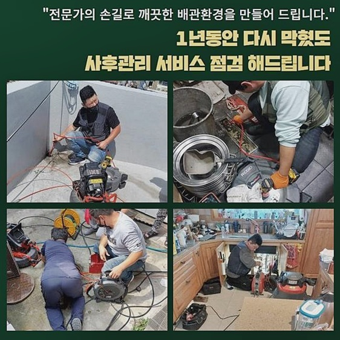
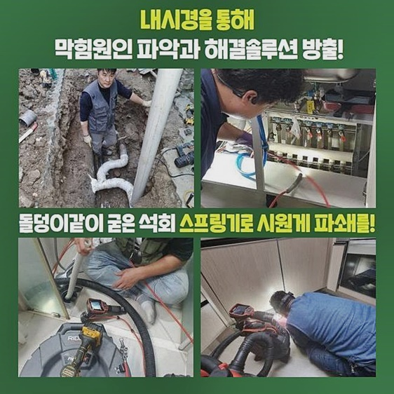
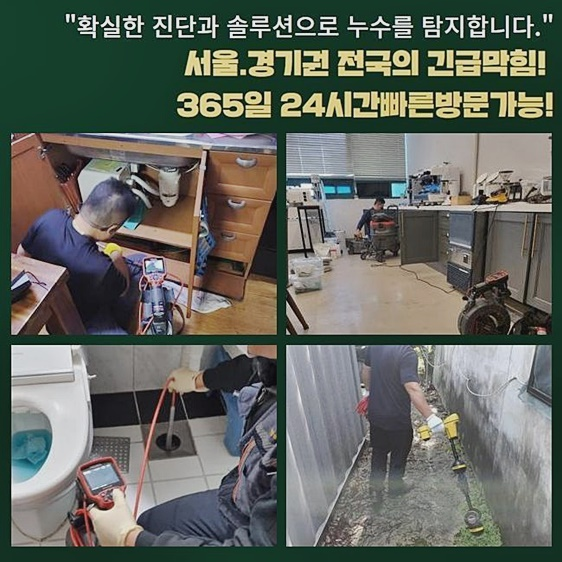
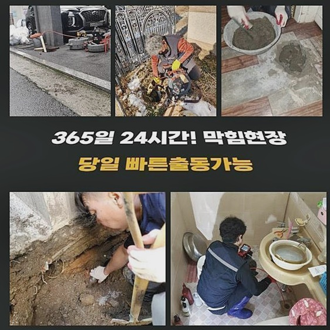

🏠 고양시 효자동씽크대역류 능곡동 하수구뚫어주는업체 누수탐지공사
고양 싱크대막힘 전문 시공 후기

📋 작업 개요
- 위치: 고양
- 서비스 유형: 싱크대막힘, 하수구막힘, 배관막힘, 누수수리, 역류해결, 뚫는업체, 배관청소, 고압세척, 설비공사
- 작업 일시: 2024. 8. 18. 10:56
- 업체명: 하수구수사대 (010-5615-2118)
🔍 문제 상황
고양시 효자동씽크대역류 능곡동 하수구뚫어주는업체 누수탐지공사
갑작스럽게 구분건축물에 사시던 고객이 싱크대쪽이 막혀 시정을 요청하였죠
씽크대는 설거지등을 한다거나 요리를 하시다가 음식물쓰레기나 기름류들이 하수도로 흐르는 상황이 자주 발생되는데요
깊은 곳에서 이물이 쌓이며 흐름들을 느리게 만듭니다
때때로 점검해보고 세척을 진행하는게 우선인데 신경쓰며 진행시키는게 힘들기에 결함이 성큼 다가온다면 빨리 전문진들에게 문의해서 바로잡는게 좋죠
고객이 불러주신 곳으로 내방하여 내시경장치를 사용해 하수관의 상황을 봅니다
금일처럼 막힘문제가 생겨났을 경우에 입구쪽에도 오염원이 넘실거릴 가능성이 많아요
예측한것처럼 배수관에 고이게되어 내부의 잔해물의 종류들을 특정해내기에는 힘든 상태였어요
그러므로 육안으로 보이는 곳부터 오수들을 제거시키고 하수관을 내시경장비를 가용시켜 점검해주었는데요
입구부터 오수나 부유물들을 신속히 없애줄때에 석션만큼 좋은게 없는데요
흡입하는 힘을 발휘한 뒤 오수들을 흡입하여 청소해주죠

🔎 원인 분석
💡 전문가 진단: 정밀 진단 장비를 사용하여 슬러지의 고착 여부를 판명하고 타격/세척 작업을 실시했습니다.
그럼에도 불구하고 단단해졌거나 군데군데 접착된 기름성분들을 세척할 땐 적합하지 않기에 샤프트장비와 병행하면 케미가 높아집니다
우선 초입부분에 잔존하는 하수를 없애려는 심산으로 석션을 운용해주어 흡입하고 하수관을 내시경장치 이용에 착수해요
내시경의 라인을 하수관의 내측부로 진입해주어 확인했더니 상당수의 기름이 존재했어요
평시에 주방을 쓰시면서 웍이나 기름성분이 잔뜩 있는 접시를 닦아낼 때에 기름성분을 꼼꼼하게 닦아내고 식기류 청소를 하는 경우가 얼마나 되는지 생각해보셨나요?
기름류들이 제거되지 않은 식기구들을 닦아낼 떄 기름들이 싱크대와 연결된 하수도에 자연스레 흘러가요
향후 하수도에서 굳게되며 강도 높은 이물로 우리 앞에 나타나죠
기름이라 함은 고온일땐 녹지만 장기간 지속되어 고착화가 이뤄졌다면 온수도 빛을 발하지 못하죠
위와같은 상황으로 인해 문제를 완화시키기위해 요구되는것이 샤프트도구를 쓴 세척입니다
장비의 앞코의 사슬들이 하수도를 지나가며 회전을 통하여 이물들을 제거시킵니다
이 과정들을 계속하면 벽면에 축적된 기름잔해와 오염물이 떨어져나가는데요
마찬가지로 샤프트기의 장비는 내시경장치와 같이 케이블로 구성되어있는 형태에요

🔧 작업 과정
그렇기때문에 장치의 장비와 내시경의 선이 일시에 투입되요
배수관을 구석까지 살피면서 불편들을 바로잡기에 신속한 작업이 이뤄집니다
막히게된 오류들이 발생되는 까닭은 한가지가 아니지만 그속에서도 기름이 배수관의 흘러가는 통로들도 막아버리면서 문제되는 현상이 때때로 생기게됩니다
그정도로 기름들이 결함이 된다는 의미를 내포하는데 쌓여가는 단단해진 것들을 거름망과 같은걸 바꾸어 눈에 띌만큼 줄이는건 아니에요
그러하기에 보통 때에 주방을 쓰는 중에 기름이라 함은 최대한 제거시키고 식기류 청소를 이행하는게 좋은데요
그리고 주기적으로 배수관로로 온수들을 부어주며 기름이 안에서 안쌓이게 조치한다면 문제를 회피하시는데에 이점이 많아요
꾸준히 샤프트기의 작업을 지속하면 막힘들을 불러 일으키던 기름들과 잔해들이 이전과 달리 없어진것을 봤어요
작업 후엔 즉시 내시경장치를 통하여 여기저기 확인되기에 의뢰인분들도 안심되겠죠?
추후에 막힘문제가 생겨나지 않도록 관리책들과 유의해야할 것도 설명드리고 있기에 다시 증세가 반복되지않게끔 사용자가 신경써주어 관리하는 게 좋죠
그리고 s자형 트랩도 세심하게 결합시켰어요
트랩의 기능이라 함은 잔해들이 배관 아래로 안빠지게 막는 기능을 하고 신속한 물빠짐을 위해 많은분들이 찾고있는 부품이죠
그렇지만 트랩연결부에 잔해물이 축적되면 막히는 현상이 다시금 나타나니 자주 청소도 진행해주며 관리해주는게 가장 큰 도움이 된다 말씀드렸죠
설치까지 마무리되었을 땐 주름호스와 하수도에 틈들이 생겨나지 않도록 접착시켰어요
접합지점에서 틈이 발생되었을 시 냄새까지 내부로 퍼져 불편들은 가중될 수 밖에 없어요
그리하여 최대한 빈틈없게 접합시켰습니다
이번 문제의 현장들로서 청소된 기름고착물의 모습인데요
생각했던 것과 달리 다량의 이물질들이 내부에서 쌓여있던 모습이라 소요되는 시간도 예측한것보단 늘어났어요
그러나 시간들이 늦게까지 걸릴지언정 원인들을 시정하게끔 꾸준히 노력합니다


✅ 작업 완료
오수가 시원히 흘러가는 현상까지 고객과 관찰하고 저희전문진은 주변까지 정리해드리고 철수했죠
개수대가 문제를 보이면 까닭은 주로 깊숙한 지점서 이물이나 기름들이 축적된 경우입니다
그렇지만 라인의 형상이나 하수관의 상태에 때문에 양상이 천차만별이라 전문인과 협심해 시정을 받아보고 해결해보시는 것이 안정적일테죠
배관뚫음이 필요할 경우 서둘러서 문의해보세요!
고객분이 계신 장소로 서둘러 가도록 할게요!


⚠️ 베란다 누수 및 방수 관리 방법
- ✅ 비가 많이 올 때 창틀 주변이나 아래층 천장에 얼룩이 생기는지 정기적으로 확인해 보세요.
- ✅ 우수관 주변 실리콘 마감이 들뜨거나 깨진 틈새가 있는지 손상 여부를 수시로 체크하세요.
- ✅ 베란다 바닥 타일의 줄눈(메지)이 소실되면 그 틈으로 물이 침투하여 누수가 유발됩니다.
- ✅ 누수 의심 증상 발견 시 방치하면 아래층 손실이 커지므로 즉시 전문가의 진단을 받으십시오.
💡 핵심 정리
- 확실한 장비 작업(내시경 점검 및 샤프트 스케일링)으로 원인을 뿌리 뽑습니다.
- 작업 후 1년 이내에 동일한 부위 재발 시 100% 무상 A/S 서비스를 보장합니다.
- 서울 · 경기 · 인천 전 지역에 24시간 언제든 긴급 출동할 수 있도록 항시 대기 중입니다.
❓ 자주 묻는 질문 (FAQ)
🚨 고양 싱크대막힘 문제로 고민이신가요?
정확한 원인 진단과 확실한 시공으로 재발 없는 해결을 약속드립니다.
24시간 긴급 출동 | 서울 · 경기 · 인천 전지역 | 1년 내 재발 시 무상 A/S